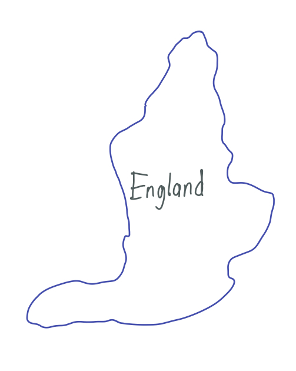
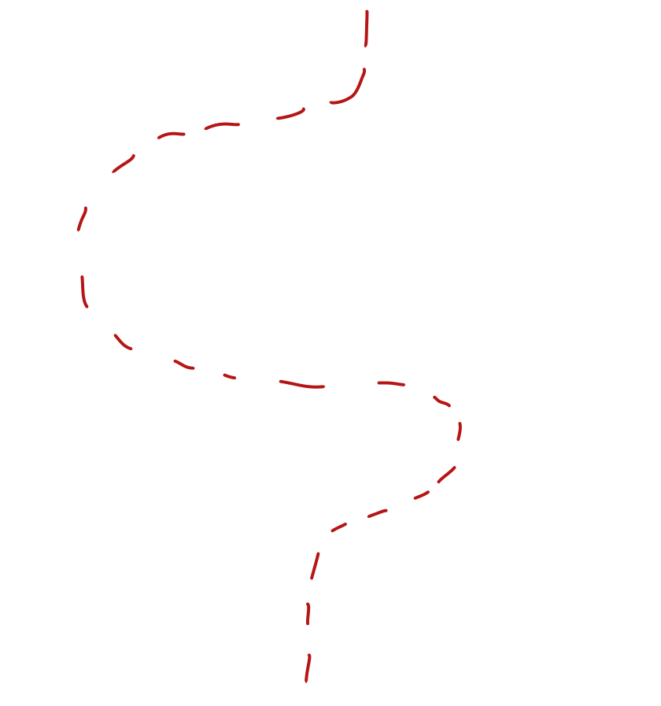
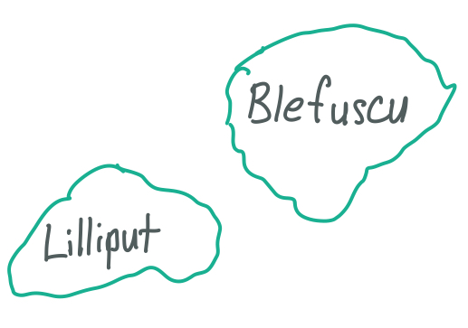
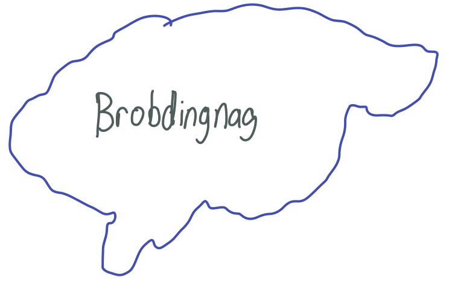
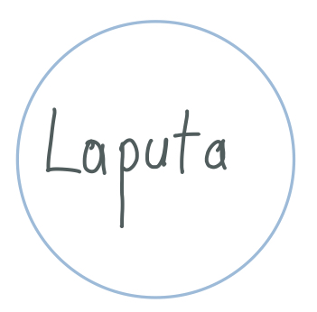
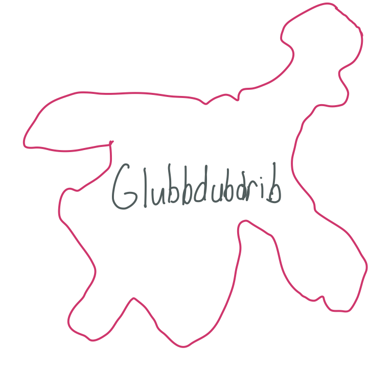
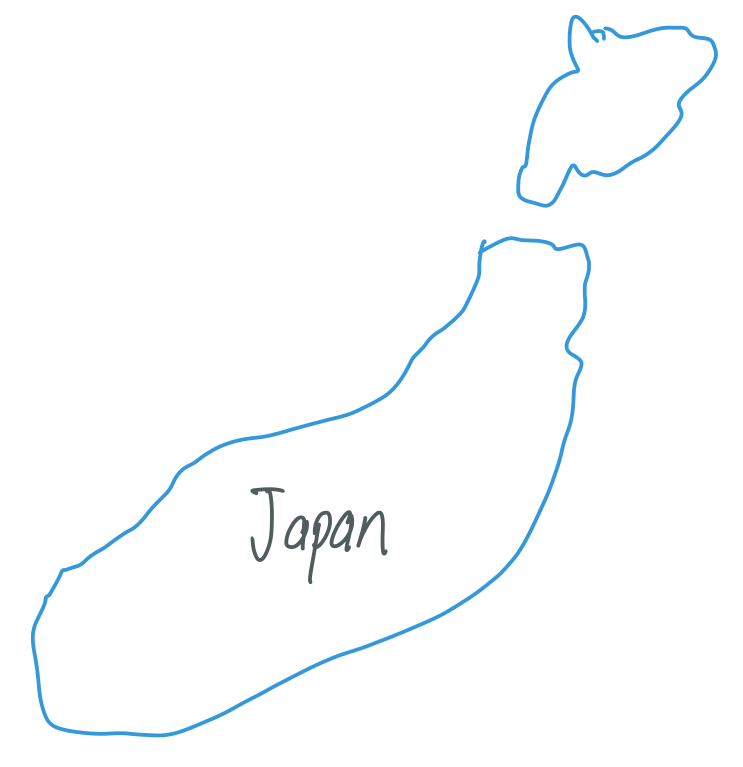
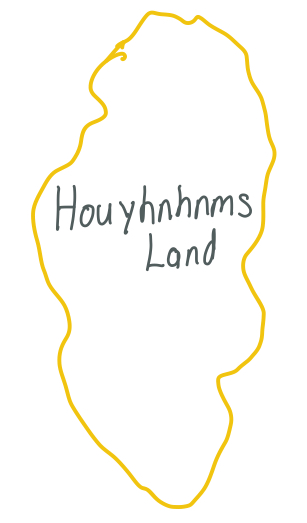

Gulliver's Travels Interactive Infographic
Keenan Nguyen
Press the images to learn more about each country/nation!
       
×
England
- Gulliver is from Nottinghamshire, England.
- Most of his voyages start in England.
Appears in Part I, Part II, Part III, and Part IV
×
Lilliput & Blefuscu
- The inhabitants of Lilliput are the Lilliputians.
- The inhabitants of Blefuscu are the Blefuscudians.
- Lilliput and Blefuscu are enemies.
Appears in Part I
×
Brobdingnag
- The inhabitants of Brobdingnag are Brobdingnagians.
- Brobdingnag is located off the western coast of the United States.
Appears in Part II
×
Laputa
- The inhabitants of Laputa are Laputians.
- Laputa flys using a giant magnet. The magnet can push and pull the island closer and farther from sea level.
Appears in Part III
×
Balnibarbi
- Balnibari is located directly below Laputa.
- Gulliver visited the "Grand Academy", which is located in Balnibari.
Appears in Part III
×
Glubbdubdrib
- The inhabitants of Glubdubdrib are Glubdubdribians.
- "Glubdubdrib" translates to "the island of magicians".
Appears in Part III
×
Luggnagg
- The inhabitants of Luggnagg are Luggnaggians.
- Luggnagg is located east of Japan.
Appears in Part III
×
Japan
- After visiting Laputa, Glubbdubdrib, and Luggnagg, Gulliver goes to Japan.
Appears in Part III
×
Houyhnhnms Land
- The inhabitants of Houyhnhnms Land are Houyhnhnms and Yahoos.
Appears in Part IV